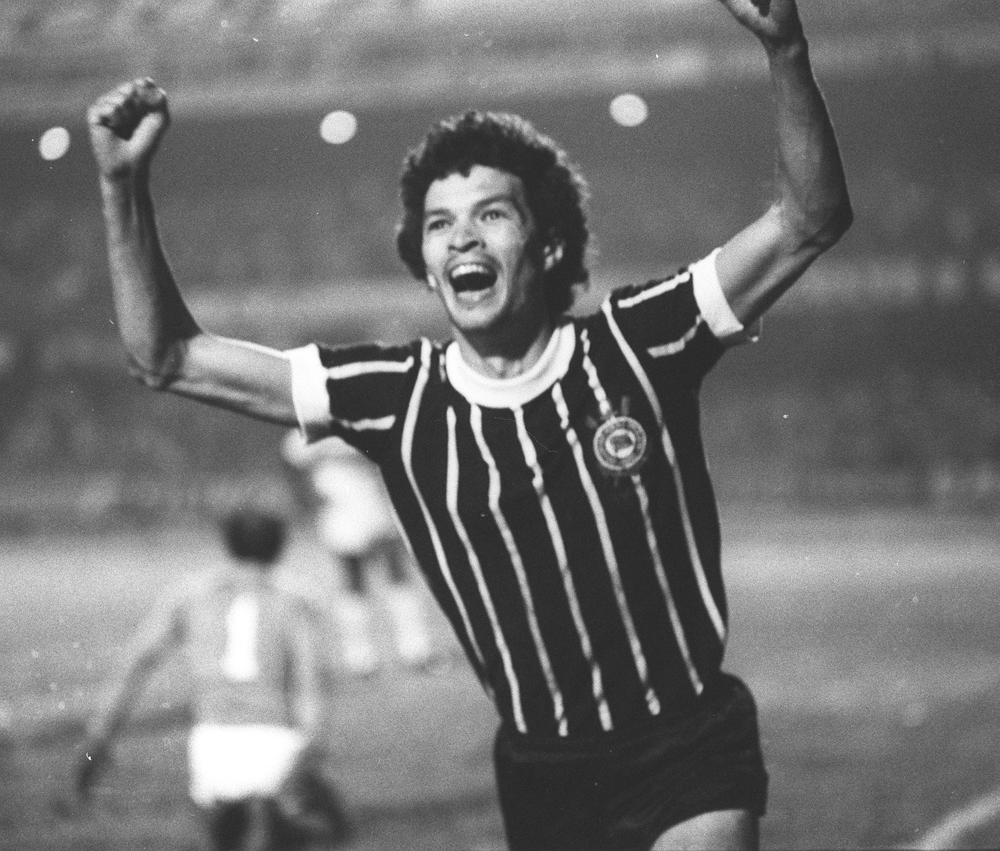
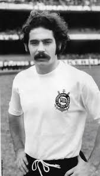
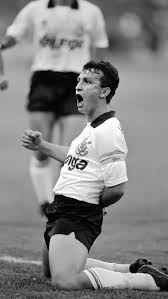
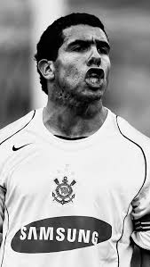
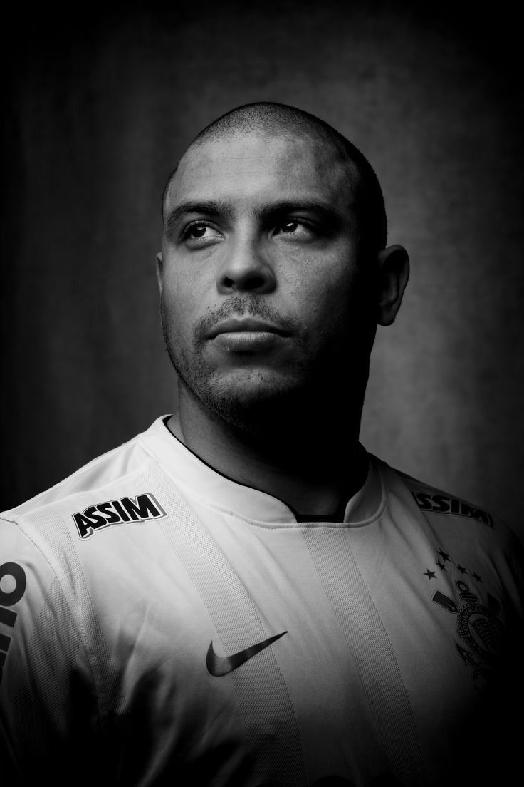
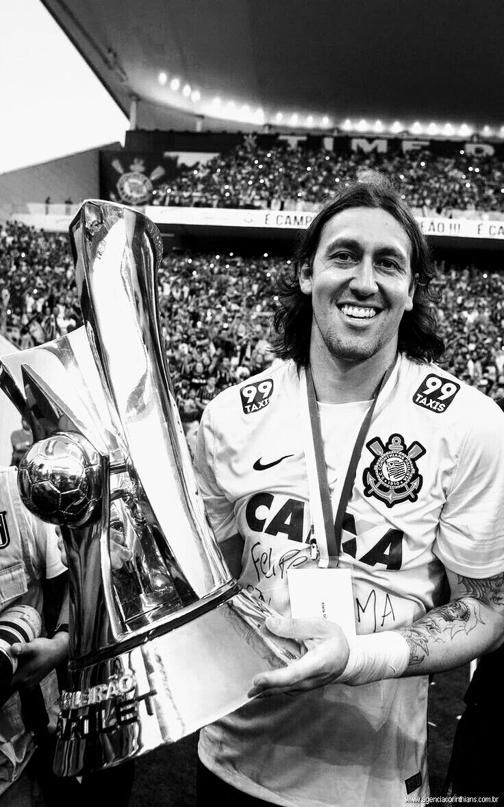
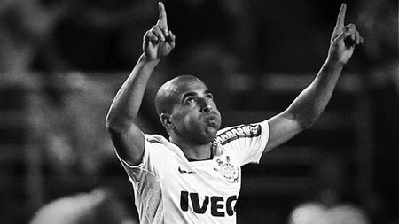

Ídolos Eternos

Sócrates
Meia · 1978–1984O Doutor. Líder da Democracia Corinthiana, revolucionou o futebol dentro e fora de campo com inteligência e visão política.

Rivellino
Meia-esquerda · 1965–1974Dono do chute mais potente de sua geração. Campeão do mundo em 1970, é sinônimo de elegância e força.

Neto
Meia · 1989–1993Camisa 10 de talento puro. Craque decisivo que marcou época com gols antológicos e personalidade irreverente.

Tevez
Atacante · 2005–2006O Apache. Em apenas uma temporada conquistou o coração da Fiel com raça e gols decisivos.

Ronaldo
Atacante · 2009–2011O Fenômeno escolheu o Corinthians para encerrar sua carreira e conquistou títulos inesquecíveis.

Cássio
Goleiro · 2012–2023O Gigante. Herói do Mundial de 2012 e maior goleiro da história do clube.

Emerson Sheik
Atacante · 2010–2013Autor do gol do título mundial em 2012. Decisivo nos maiores momentos recentes.

Marcelinho Carioca
Meia · 1994–2001O Pé de Anjo. Dono de cobranças de falta espetaculares e um dos maiores artilheiros da história do clube.